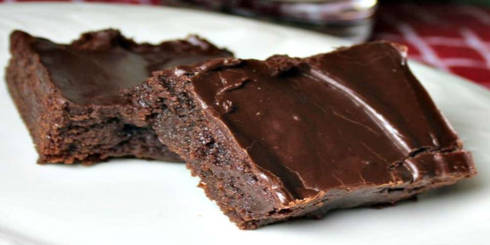

Best Brownies
Table of Contents
- Description
- Ingrediants
- Steps

Description
Just another brownie recipe.
Ingrediants
- ½ cup butter
- 1 cup white sugar
- 2 eggs
- 1 teaspoon vanilla extract
- ⅓ cup unsweetened cocoa powder
- ½ cup all-purpose flour
- ¼ teaspoon salt
- ¼ teaspoon baking powder
Frosting:
- 3 tablespoons butter, softened
- 3 tablespoons unsweetened cocoa powder
- 1 tablespoon honey
- 1 teaspoon vanilla extract
- 1 cup confectioners' sugar
Steps
- Preheat oven to 350 degrees F (175 degrees C). Grease and flour an 8-inch
square pan.
- In a large saucepan, melt 1/2 cup butter. Remove from heat, and stir in
sugar, eggs, and 1 teaspoon vanilla. Beat in 1/3 cup cocoa, 1/2 cup flour,
salt, and baking powder. Spread batter into prepared pan.
- Bake in preheated oven for 25 to 30 minutes. Do not overcook.
- To Make Frosting: Combine 3 tablespoons softened butter, 3 tablespoons
cocoa, honey, 1 teaspoon vanilla extract, and 1 cup confectioners' sugar.
Stir until smooth. Frost brownies while they are still warm.
More Recipes
Navigation
back to top
homepage